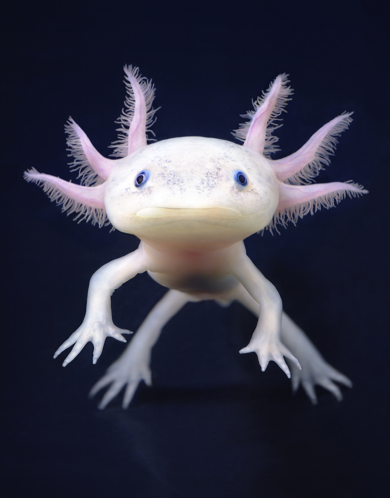
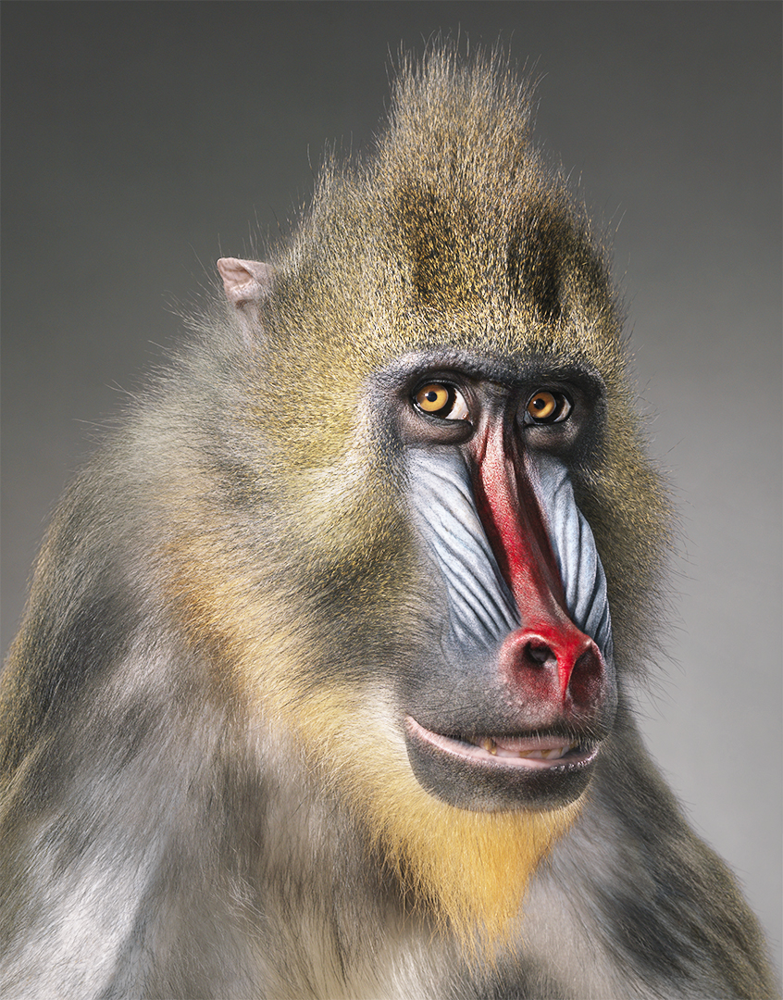

Fotos de los animales en peligro de extinción
Estos animales son claves para el ecosistema y su desaparición afectaría gravemente la biodiversidad.

Causa del peligro: Pérdida de hábitat por la deforestación y la reducción del bambú, su principal alimento.

Los ajolotes se están extinguiendo por contaminación del agua, destrucción de su hábitat en los lagos de México y captura ilegal para el comercio y la investigación.

Debido a que los mandriles viven en grupos tan grandes, gran parte de su población puede caer en el comercio en auge en una sola cacería
Estos animales son claves para el ecosistema y su desaparición afectaría gravemente la biodiversidad.
Más de 41,000 especies están en peligro de extinción en 2025.